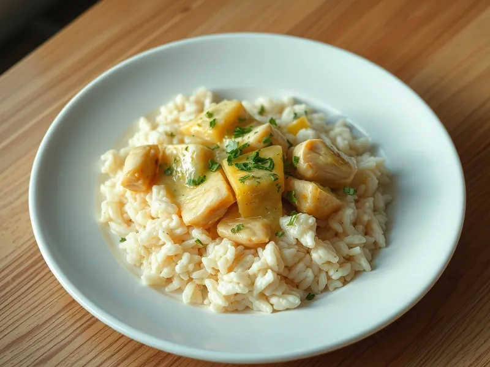

Курица с рисом в сливочном соусе на сковороде
Рис, сваренный вместе с курицей в сливочно-чесночном соусе с сыром
30 мин4 порц.516 ккал на порциюБ 32 · Ж 19 · У 55Интернациональная кухня
Открыть в приложении: порции, таймеры, список покупок
Продукты на 4 порц.
- Рис1,3 стак.
- Куриное филе400 г
- Лук репчатый1 шт
- Чеснок2 зуб.
- Сливки 20%1 стак.
- Сыр твёрдый40 г
- Сливочное масло20 г
- Вода2,5 стак.
- Соль1,5 ч. л.
- Перец чёрный молотыйпо вкусу
- Петрушка по желаниюпо вкусу
Как готовить
- Нарежьте филе кубиками 2 см, лук мелко, чеснок пропустите через пресс. Рис промойте.
- Растопите масло в глубокой сковороде на среднем огне и обжарьте курицу 4 минуты, пока кусочки не побелеют. Добавьте лук и жарьте ещё 3 минуты.
- Всыпьте рис, добавьте чеснок и перемешайте 1 минуту.
- Влейте горячую воду и сливки, посолите и поперчите. Доведите до кипения, накройте крышкой и готовьте на слабом огне 18 минут, пока рис не станет мягким, а жидкость почти не впитается.
- Посыпьте тёртым сыром, перемешайте и дайте постоять под крышкой 2 минуты. Посыпьте петрушкой.
Совет. Если рис ещё твёрдый, а жидкость ушла, добавьте 50 мл горячей воды и подержите под крышкой ещё 5 минут.